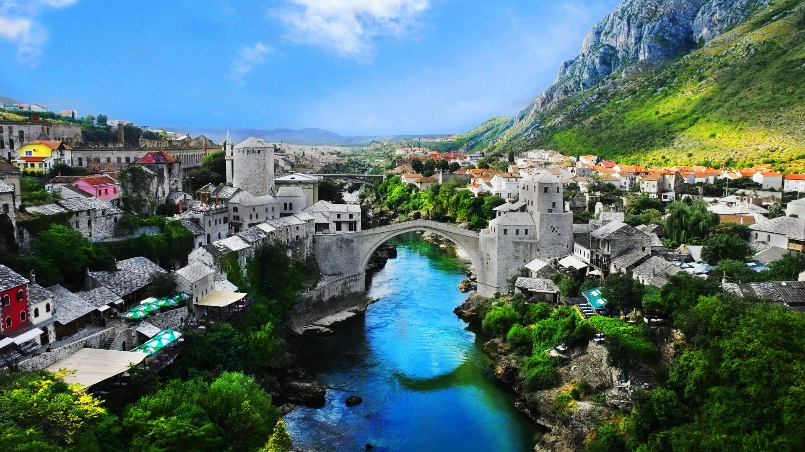
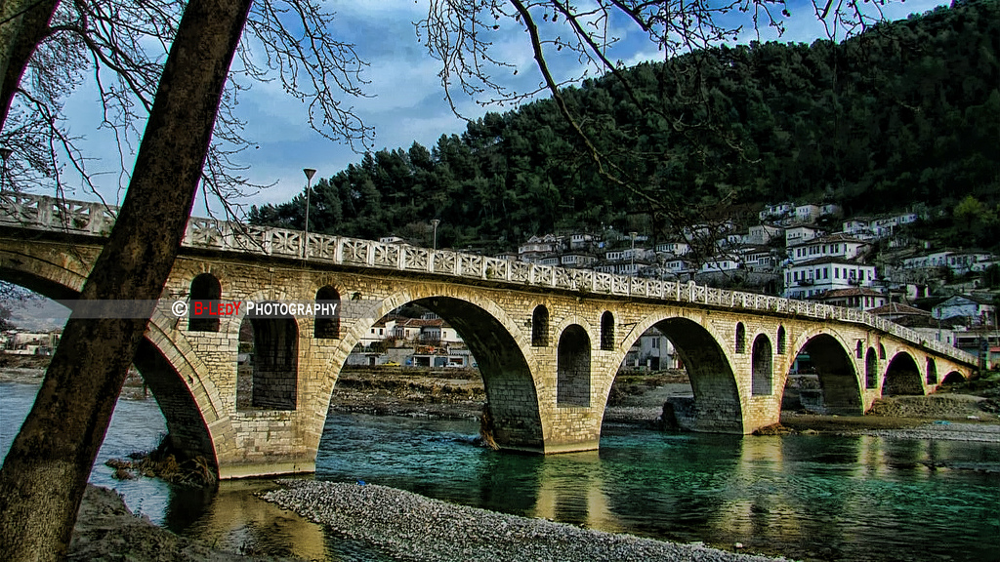

Photo Collection: Bosnia and Herzegovina
Stari Most
- Stari Most (English: Old Bridge) is a 16th-century Ottoman bridge in the city of Mostar in Bosnia and Herzegovina that crosses the river Neretva and connects the two parts of the city. The Old Bridge stood for 427 years, until it was destroyed on 9 November 1993 by Croat forces during the Croat and Bosniak War. Subsequently, a project was set in motion to reconstruct it, and the rebuilt bridge opened on 23 July 2004.

Berati,Albania
Berat is a city and a municipality located in south-central Albania, and the capital of the County of Berat and also one of the world's oldest continuously inhabited cities. In July 2008, the old town called Mangalem district, was inscribed on the UNESCO World Heritage List.
